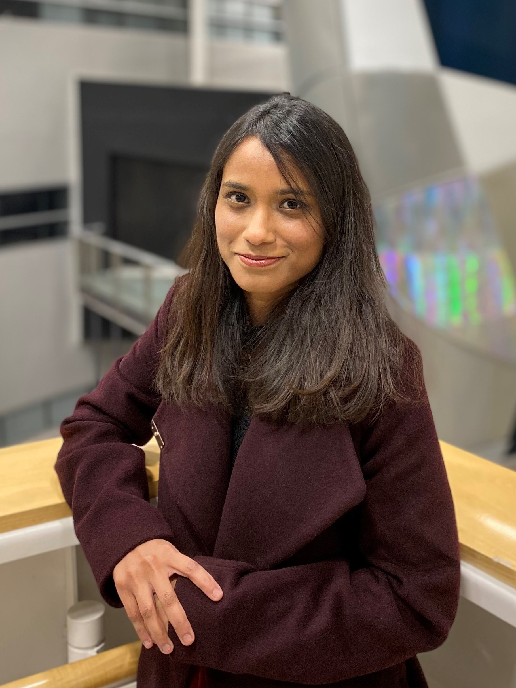
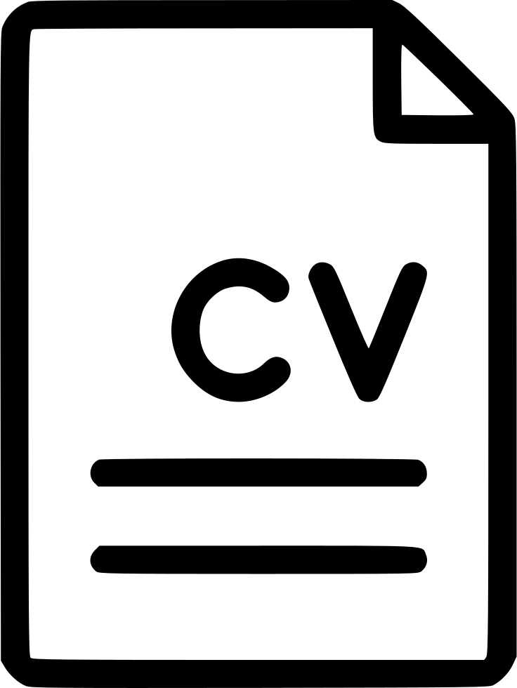

|  | |||
Tabassum MahmudPh.D. Candidate in Computer Engineering Iowa State Univeristy |
|||
|
|
|
|
 | About meI'm a PhD candidate in ECpE Department at Iowa State University, pursuing my research under the guidance of Dr. Mai Zheng. EducationPh.D. in Computer Engineering, 2019 - Current Iowa State University, Ames, Iowa B.Sc. in Electrical and Electronic Engineering, 2013 - 2017 Chittagong University of Engineering and Technology, Bangladesh |
Research Interest
My research interest falls into the broad area of storage systems such as system reliability and security, Performance analysis of storage systems, databases and distributed systems. Previously I have worked on improving the reliability of storage system by detecting configuration related-issues in linux file systems and their utilities. Currently my research is focused on improving performance of copy-on-write file systems. I'm part of the Data Storage Lab (DSL) maintained by Dr. Mai Zheng.
Publications
- Revisiting Erasure Codes: A Configuration Perspective. (To Appear)
Runzhou Han, Chao Shi, Tabassum Mahmud, Zeren Yang, Vladislav Esaulov, Lipeng Wan, Yong Chen, Jim Wayda, Matthew Wolf, Mai ZhengPoster session, 38th International Conference on Massive Storage Systems and Technology (MSST), 2024 - Revisiting Computational Storage for Data Integrity and Security. (To Appear)
Chao Shi, Anthony Manschula, Tabassum Mahmud, Zeren Yang, Yong Chen, Jim Wayda, Matthew Wolf, Byungwoo Bang, Mai Zheng Proceedings of the 14th ACM Workshop on Hot Topics in Storage and File Systems (HotStorage), 2024 - Drill: Log-based Anomaly Detection for Large-scale Storage Systems Using Source Code Analysis.
Di Zhang, Chris Egersdoerfer, Tabassum Mahmud, Mai Zheng, Dong Dai. Proceedings of the 37th IEEE International Parallel Distributed Processing Symposium (IPDPS), 2023. (IPDPS), 2023
[Paper] - Analyzing Configuration Dependencies of DAX File Systems.
Tabassum Mahmud, Om Rameshwar Gatla, Duo Zhang, Carson Love, Ryan Bumann and Mai Zheng 14th Annual Non-Volatile Memories Workshop (NVMW), 2023
[Paper] - Drill: Log-based Anomaly Detection for Large-scale Storage Systems Using Source Code Analysis.
Di Zhang, Chris Egersdoerfer, Tabassum Mahmud, Mai Zheng, Dong Dai Proceedings of the 37th IEEE International Parallel & Distributed Processing Symposium (IPDPS), 2023 - CONFD: Analyzing Configuration Dependencies of File Systems for Fun and Profit.
Tabassum Mahmud, Om Rameshwar Gatla, Duo Zhang, Carson Love, Ryan Bumann and Mai Zheng Proceedings of the 21st USENIX Conference on File and Storage Technologies (FAST), 2023
[Paper] [Slides] [Video] [Prototype] - On the Reproducibility of Bugs in File-System Aware Storage Applications.
Duo Zhang, Tabassum Mahmud, Om Rameshwar Gatla, Runzhou Han, Yong Chen, Mai Zheng Proceedings of the 16th IEEE International Conference on Networking, Architecture, and Storage (NAS), 2022
[Paper] - Understanding Configuration Dependencies of File Systems.
Tabassum Mahmud, Duo Zhang, Om Rameshwar Gatla, and Mai Zheng Proceedings of the 14th ACM Workshop on Hot Topics in Storage and File Systems (HotStorage), 2022 Best paper nominee!
[Paper] [Slides] [Video] - Understanding Configuration Issues in Storage Systems.
Tabassum Mahmud, Mai Zheng. Work in Progress and Poster, 20th USENIX Conference on File and Storage Technologies (FAST), 2022
Teaching Assistant Experience
-
CprE 563: Advanced Data Storage (Spring-24)
-
CprE 308: Operating System (Spring-23)
Graduate Courses Taken
-
High-Performance Communication Networks (CprE 541) (Fall-22)
-
Applied Formal Methods (ComS 507) (Fall-21)
-
Distributed Systems (CprE 550) (Spring-21)
-
Design and Analysis of Algorithms (ComS 511) (Fall-20)
-
Network Protocols and Security (CprE 530) (Fall-20)
-
Statistical Theory for Research Workers (Stat 588) (Spring-20)
-
Advanced Data Storage (CprE 563)(Spring-20)
-
Real-Time Systems (CprE 554) (Fall-19)
Awards and Scholarship
-
Received “Best Paper Nominee” at HotStorage'22
-
Received USENIX diversity grant to attend FAST'20, FAST'22, FAST'23 conference
Other Professional Activities
-
Served as Artifact Evaluation Committee member for Symposium on Operating Systems Principles (SOSP), 2023
-
Selected as a Mentee in USENIX Conference on File and Storage Technologies FAST 2022 Mentorship Program
-
Served as sub-reviewer for IEEE International Parallel & Distributed Processing Symposium (IPDPS), 2022
-
Served as sub-reviewer for Workshop for REU Research in Networking and Systems (REUNS), 2022
-
Selected as a Mentee in CCS iMentor 2021 Workshop